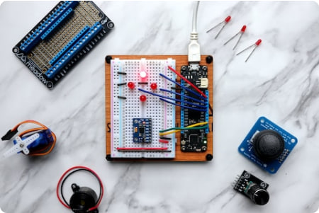
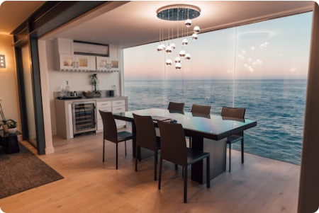
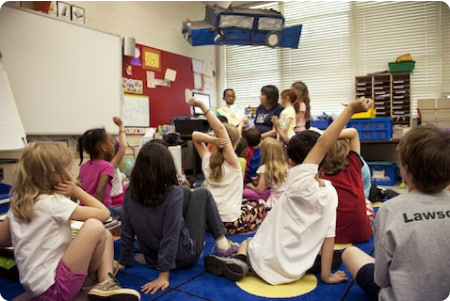
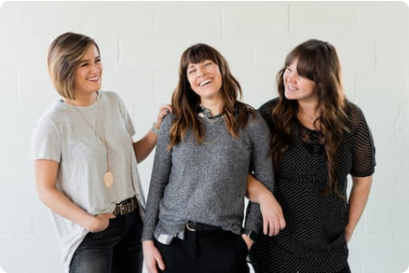

Semua Bacaan
Teknologi
Media
Pengembangan Diri
Desain
Budaya
Dunia
Pendidikan
Lihat Semua Topik

09 Juni 2023
Internet of Things (IoT) dan Masa Depan Keterhubungan dalam Kehidupan Sehari-hari
Kristin Watson
media
bookmark
02 Juni 2023
Mengembangkan Keterampilan Berpikir Kritis melalui Pendidikan: Strategi dan Implementasi di Kelas
Cameron Williamson
media
bookmark
15 Agustus 2023
Inovasi Teknologi Big Data: Menggali Wawasan dan Mendukung Pengambilan Keputusan yang Efektif
Arlene McCOy
media
bookmark

27 Maret 2023
Desain Interior Ramah Lingkungan: Pendekatan Green Design dalam Menciptakan Ruang yang Berkelanjutan
Chance Vaccaro
media
bookmark

23 Januari 2023
Pendidikan Karakter: Membangun Nilai-Nilai Etika dan Moral pada Anak-anak
Darrell Steward
media
bookmark

Peran Penting Kepercayaan Diri dalam Pengembangan Pribadi dan Profesional
13 April 2023
Peran Penting Kepercayaan Diri dalam Pengembangan Pribadi dan Profesional
Savannah Nguyen
media
bookmark
Savannah Nguyen
media
bookmark